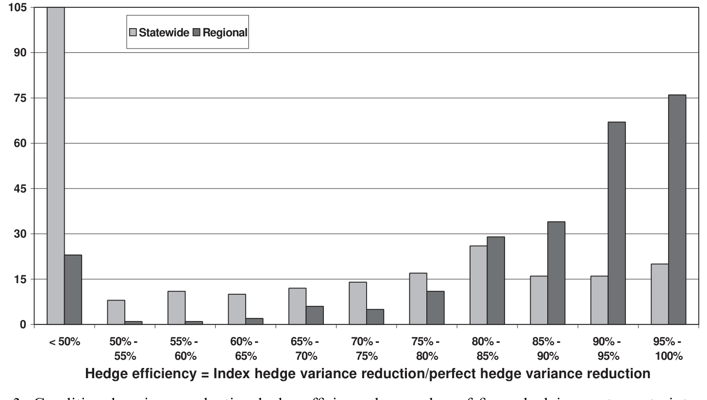
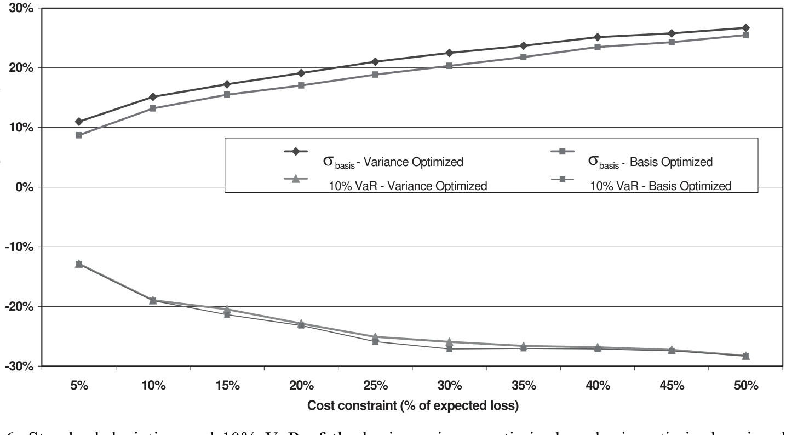
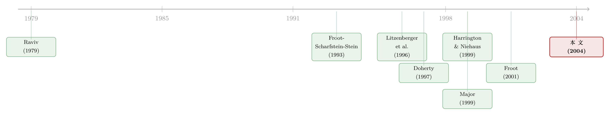

蝗灾买不到保险，却可以「打包卖给华尔街」——但你敢买吗？
本文读的是 Cummins, Lalonde & Phillips (2004, Journal of Financial Economics)：他们用一套飓风模拟模型，给 255 家佛罗里达保险公司各自跑了一万年的飓风损失，去回答一个被业界喊了十年却从没人量过的问题——如果用「行业损失指数」而不是「你自己的损失」来设计巨灾对冲合约，你究竟要承担多大的基差风险（basis risk）？答案是：对前两个规模档的大公司，用四个分区指数对冲，效果几乎和「赔你自己的损失」一样好；但对最小的那批公司，基差风险大到足以让这种合约形同虚设。
1 一个卖不出去的好东西
先讲一个看上去自相矛盾的事实。
1992 年的飓风 Andrew、1994 年的 Northridge 地震，两场加起来给保险业砸出了 $30 billion 的承保损失；而模型推算，一场真正的佛州大飓风或加州大地震，损失可能突破 $100 billion。这笔钱有多大？它大约等于全美财产责任险业全部股本的 30%——足以把整个行业压趴下。但若换一个参照系，它不到美国股票加债券市场总市值的 0.5%。
于是一个再自然不过的念头冒了出来：既然保险业自己的资本扛不住这种尾部损失，而资本市场又大到几乎感觉不到它，那为什么不把巨灾损失证券化（securitization），直接打包卖给资本市场的投资者？更妙的是，有人论证自然巨灾是「零贝塔（zero-beta）」事件——飓风什么时候登陆，和股市涨跌毫无关系——所以这类证券对投资者来说还是一份难得的分散化工具（Litzenberger et al., 1996; Canter et al., 1997）。
听起来天衣无缝。1992 年，芝加哥期货交易所（CBOT）顺势推出了挂钩巨灾损失指数的期货合约，后来演化成看涨期权价差（call option spread）。CBOT 一口气准备了九个指数：一个全国指数、五个区域指数、三个州级指数（加州、佛州、德州）。
然后呢？然后这些合约因为成交量极低被悄悄撤了下来。绝大部分真正募到的巨灾风险资本，走的是另一条路——CAT 债券（CAT bond），而且几乎都是「赔发行人自己损失」的那种。
为什么市场用脚投票，否决了那个看上去更优雅的指数方案？
2 道德风险与基差风险：一枚硬币的两面
要理解这个反转，得先看清楚保险证券化里那个绕不开的取舍。这是 Doherty (1997) 早就点破的一组对立。
一份巨灾证券，赔付总要挂钩某个变量。粗分有三类触发器：发行人自己的损失、行业损失指数、以及基于事件物理特征（风速、震级）的参数指数。
- 用发行人自己的损失做触发器，没有任何基差风险——你损失多少，合约就赔你多少。代价是道德风险（moral hazard）：既然有人兜底，保险公司还有什么动力去严格核保、控制理赔？投资者看不见你的内部经营，只能担心被你「薅羊毛」。
- 用行业指数或参数指数做触发器，几乎消灭了道德风险——单家公司再怎么放水，也撼动不了整个行业的损失指数。而且指数合约更容易标准化、报损更快、流动性更高、交易成本更低。代价则是基差风险：行业损失和你自己的损失并不完全同步，真出了大事，指数赔给你的钱可能远不够补你的窟窿。
这就是那枚硬币的两面。业界之所以集体倒向「赔自己损失」的 CAT 债券，给出的理由几乎众口一词：指数合约的基差风险高到无法接受（American Academy of Actuaries, 1999）。
但这里有个耐人寻味的细节：这个「无法接受」，几乎全是主观感受。在这篇文章之前，关于「用指数对冲巨灾，基差风险到底有多大」，几乎没有任何系统的经验证据。业界拒绝一样东西，靠的是直觉，而不是测量。
本文的全部张力就压在这一句话上：基差风险是消灭道德风险的「价格」，而这个价格，从来没有人认真标过。 整篇论文做的，就是把这个被喊了十年的价格，一分一厘地算出来。
3 怎么给一个「不存在的市场」做实验
难点在于：巨灾指数证券这个东西，是个标的资产不可交易、价格无从观测的衍生品——它和天气衍生品一样，属于「奇异标的（exotic underlyings）」那一类。你没法用历史价格回测，因为根本没有像样的历史价格。
那真正关键的一步在于：既然现实世界给不了数据，就用一台足够可信的模拟器，造出一万年的飓风。
作者用的是 Applied Insurance Research（AIR）的飓风模型——这是 1987 年起就被保险业广泛使用、并且是第一个通过佛州保险委员会飓风损失预测方法认证的模型。它的逻辑是从物理到损失的一条完整链路：先用蒙特卡洛模拟 10,000 年里每年的风暴个数（共生成 >18,000 个事件），再模拟每个风暴的登陆点与气象特征（中心气压、最大风速半径、移动速度、路径方向），然后沿路径推演每个地点的风场，最后结合各地的保额、建筑类型、保单条款（免赔额、限额、共保），算出每家公司的损失。
样本是佛州——全美飓风暴露最高的州。数据来自佛州保险委员会，是 1998 年在佛州经营财产险的 264 家公司里 255 家的县级居民财产保额（9 家因数据缺失被剔除），占全州投保居民财产价值的 93%。换句话说，这个样本基本就代表了整个行业。
对每家公司，作者评估两种指数：一个佛州全州损失指数（对标当年 CBOT 的佛州指数），以及把全州切成四块——Panhandle、Gulf Coast、North Atlantic、South Atlantic——构成的四个分区指数（intrastate indices）。这个四分法不是为最小化基差风险而优化出来的（作者诚实地承认，存在更精细的划分能做得更好），而是借鉴了 USAA 1997–1999 年发行 CAT 债券的实务经验：分区太细，交易成本和流动性会立刻反噬——1998 年就有人尝试推出邮编级指数合约，结果无人问津、至今休眠。
4 对冲的「尺子」：非线性的看涨价差
接下来要把「对冲效果」写成可以优化的数学。这是本文方法论的核心，值得一步步看。
作者刻意分析的是非线性对冲：保险公司持有「自己的未对冲损失」这一空头，再买入挂钩某个损失指数的看涨期权价差多头。为什么是看涨价差？因为它就是 CAT 债券、巨灾期权、乃至传统超额损失（excess-of-loss, XOL）再保险合约里几乎唯一的赔付形态——下有起赔点、上有封顶。
先看完美对冲（perfect hedge），即用公司自己的损失做指数。设公司 \(j\) 的未对冲损失为 \(L_j\)，则它在完美对冲下的净损失为论文的式 (1)：
这里 \(h_j^{P}\) 是对冲比率，\(M_j^{P}\)、\(U_j^{P}\) 是价差的下、上行权价。完美对冲之所以「完美」，是因为括号里那个期权价差挂钩的正是 \(L_j\) 本身——你赔多少，期权就照着你这条损失曲线赔，没有任何错位。它大致等价于买一份巨灾再保险或发一只「赔自己损失」的 CAT 债券。
真正的分歧出现在把指数换掉的那一刻。全州指数对冲下，净损失变成式 (2)：
$$L_j^{S} = L_j - h_j^{S}\big[\text{Max}(L^{S} - M_j^{S},\,0) - \text{Max}(L^{S} - U_j^{S},\,0)\big]$$
注意期权挂钩的是全行业的州级损失 \(L^{S} = \sum_j L_j\)，而被对冲的还是你自己的 \(L_j\)。两者不再是同一条曲线——这正是基差风险的源头。分区对冲则是把它在四个区上各做一遍再加总，式 (3)：
$$L_j^{R} = \sum_{r=1}^{R}\big[L_{jr} - h_j^{r}\big[\text{MAX}(L_r^{R} - M_j^{r},\,0) - \text{MAX}(L_r^{R} - U_j^{r},\,0)\big]\big]$$
其中 \(L_{jr}\) 是公司 \(j\) 在区 \(r\) 的损失，\(L_r^{R}\) 是该区的行业损失，\(R=4\)。分区对冲一下子有了 12 个决策变量（4 个对冲比率 + 4 组上下行权价），它的好处显而易见：如果你的业务高度集中在某一两个区，分区指数就能贴着你的真实暴露走，错位自然变小。
作者还特意定义了一个让实务界最揪心的量——基差（basis），式 (4)：
$$B_j^{R} = (L_j^{P} - L_j^{R})$$
它就是「完美对冲该赔你的」减去「指数对冲实际赔你的」。负的基差意味着相对完美对冲的「少赔（under-collection）」，正的则是「多赔（basis gain）」。 保险公司真正怕的，正是大灾当头却被指数少赔的那一刻。
最后是优化问题本身。在某个目标函数 \(G_m(\cdot)\) 和成本约束下，以全州对冲为例是式 (5)：
$$\min_{h_j^{S},\,M_j^{S},\,U_j^{S}} \; G_m\big[L_j^{S} \mid L \in \{L_j \mid L^{S} > T\}\big]$$
$$\text{s.t.}\quad h_j^{S}\big[W(L^{S}, M_j^{S}) - W(L^{S}, U_j^{S})\big] \le C_j$$
这里 \(C_j\) 是公司 \(j\) 愿意花在对冲上的钱的上限，\(W(\cdot)\) 是期权价格。两个细节很重要：
第一，对冲的是「大损失」，不是全部损失。 优化被限定在「全州行业损失 \(L^{S}\) 超过门槛 \(T\)」的那些情景上。作者取 $T=\$1\text{ billion}$、$\$2.5\text{ billion}$、$\$5\text{ billion}$，分别对应佛州居民财产损失分布的第 23、14、8 百分位。这个设定有理论根基（Raviv, 1979）：对冲是花钱的，小灾的波动公司宁愿自留或用更便宜的手段管理，只有威胁到偿付能力的尾部巨灾才值得动用昂贵的对冲——这也和 CAT 债券市场的真实行为一致。
第二，为什么风险中性的公司还要对冲？ 作者明确假设保险公司是风险中性的——那它图什么？图的是市场摩擦：财务困境的直接与间接成本、凸性税表（Froot, Scharfstein & Stein, 1993），以及保险公司必须维持「低违约风险」声誉这一特殊动机。风险管理在这里是昂贵股本的替代品（Merton & Perold, 1993）。Froot (2001) 给出的铁证是：再保险和 CAT 债券的成交价，普遍显著高于其覆盖的预期损失——公司愿意付这个溢价去对冲，本身就是「对冲有价值」的揭示性偏好。
三把对冲目标的尺子也随之确定：条件方差缩减、风险价值（value-at-risk, VaR）、以及期望超额值（expected exceedence value, EEV）。其中条件方差缩减最直观，目标函数就是 \(G_{1T}(L_j^{i}\mid L\in L^{T}) = \sigma^{2}[L_j^{i}(h_j^{i}, M_j^{i}, U_j^{i})\mid L\in L^{T}]\)，即用指数 \(i\) 对冲后、在超过门槛的那组损失上、净损失的条件方差。
5 反转：基差风险，没有传说中那么可怕
把这套机器跑完，结论是一记漂亮的反转。
业界以为指数合约的基差风险高到不可用。但数据说：这取决于你用哪个指数、以及你有多大。
- 全州指数确实如业界担心的那样令人失望——只有最大的那批公司才能用它有效对冲。这一点验证了 Major (1999) 早先的发现：用佛州全州指数对冲存在可观的基差风险。
- 可一旦换成四个分区指数，画面就变了：处在最大的两个规模档（按佛州居民财产暴露总额分档）的公司，用分区指数对冲大损失，效果几乎和用自己损失的完美对冲一样好。第三档里也有不少公司能有效对冲。只有最小规模档的公司，才会撞上严重的基差风险。
为什么规模这么关键？因为大公司的业务在地理上更分散、更接近「行业的缩影」，它自己的损失曲线和行业指数天然贴合；小公司则往往押注在某几个县，行业指数对它而言是一面哈哈镜。这一点在对冲效率随公司数目/规模变化的曲线上看得最清楚——当你把越来越多、越来越大的公司纳入，条件方差缩减的对冲效率单调爬升、逼近完美对冲。

Figure 3: Conditional variance reduction hedge efficiency by number of firms: hedging cost constraint¼
更有意思的是基差本身的形状。前面说过，公司最怕的是「少赔」。作者比较了两种优化口径：一种以方差为目标（variance-optimized），一种直接以基差为目标（basis-optimized）。如图 6 所示，直接盯着基差去优化，能进一步压低基差的标准差和 10% VaR——也就是说，如果合约设计者愿意，是可以把「少赔」的尾部进一步收窄的。

Figure 6: Standard deviation and 10% VaR of the basis: variance-optimized vs. basis-optimized regional
于是全文落到一个既谦逊又有力的结论上：业界对指数合约的恐惧，部分是对的，但被放大了。即便用那个最让人失望的全州指数，佛州相当高比例的暴露财产价值仍能被有效对冲；换成分区指数，这个比例还能进一步抬高。基差风险不是「能不能用指数」的非黑即白，而是「谁能用、用哪一级的指数」的连续光谱。
别误读成「指数合约对所有人都好」。本文恰恰相反地指出：最需要巨灾保障的，往往是那些业务集中、资本薄的小公司，而它们正是基差风险最大、最用不上指数合约的一群。这道分配上的鸿沟，是后续政策讨论绕不开的。
6 文献脉络
把这条线索捋一捋，会看到一个典型的「理论先行、证据滞后」的故事。
最早，是 Raviv (1979) 关于最优保险合约设计的理论，奠定了「对冲是有成本的、因此应聚焦尾部大损失」的逻辑基底；Ederington (1979) 则给出了用期货做线性对冲的绩效评估框架，是后来一切对冲效率度量的源头。
接着，一个自然的问题是：巨灾这种「保险业自己扛不动」的风险，能不能交给资本市场？Jaffee & Russell (1997)、Froot (1998a, 2001) 论证了证券化相对传统再保险的效率优势；Litzenberger et al. (1996)、Canter et al. (1997) 则从资产配置角度，把巨灾证券包装成一种「零贝塔」的新资产类别。与此同时，Froot, Scharfstein & Stein (1993) 和 Merton & Perold (1993) 在公司金融一侧，给出了「风险中性的公司为何仍要对冲」的微观基础。
然后，真正的硬骨头浮现：用指数而非自身损失来对冲，要付出多大的基差风险代价？Doherty (1997) 把它清晰地刻画成「道德风险 vs 基差风险」的取舍。证据这一侧，Harrington & Niehaus (1999) 用 PCS 行业损失指数和各公司损失率做时间序列相关性分析，发现 PCS 衍生品对许多房主险公司是有效的对冲；Major (1999) 则用佛州的模拟损失，给出了「全州指数基差风险可观」的结论。

本文（2004）正站在 Major (1999) 的肩上往前走了三步：样本里的公司和风暴数量都大得多、首次系统检验了分区指数（而不只是全州指数）、并且比较了方差、VaR、EEV 等更丰富的对冲策略。它把一个被业界主观断言的命题，第一次变成了可测量、可分档、可优化的经验对象。
（关于「用并不完美的工具去对冲、由此产生基差风险」这一更一般的母题，在外汇市场里也有它的镜像，可参见《外汇敞口该怎么对冲？——把答案藏进「美元」和「套利」两个因子里》；而保险公司作为一类特殊的机构投资者，其持仓与风险行为，亦可对照《买在一起，卖也在一起：当保险公司的持仓「撞衫」》。）
7 评论与延伸（Q&A + 研究方向）
(a) 几个可能的疑问
Q：完美对冲真的「完美」吗？它和真实的再保险/CAT 债券是一回事吗？
不完全是。本文的「完美对冲」是一个基准——假设合约直接挂钩公司自己的损失、且没有任何摩擦。现实里的再保险和 CAT 债券为了控制道德风险，通常带有共保等条款，所以并不真的「完美」。把它当作衡量基差风险的上限参照即可：指数对冲离它越近，基差风险越小。
Q：基差风险小，是不是就等于指数合约一定更优？
不。基差风险只是天平的一端，另一端是道德风险和交易成本。本文的贡献是把基差风险这一端量化了，从而能和「指数合约消灭道德风险、降低交易成本、提升流动性」的好处放在一起比较。对大公司，天平明显倒向指数；对小公司则未必。
Q：结论会不会高度依赖 AIR 这台模拟器？换个模型还成立吗？
这是最实在的担忧。整篇文章的损失数据全部来自 AIR 模型，模型即数据。如果不同巨灾模型对尾部损失、对个体公司与行业的相关结构给出不同刻画，定量结论可能漂移。作者用 AIR 久经业界检验、且首个通过佛州认证来背书可信度，并用邮编级数据对县级聚合做过验证，但「换一台模型重做」的稳健性，本文无法回答。
Q：为什么对冲只盯尾部大损失，而不是全部波动？
因为对冲是花钱的（Froot, 2001 的溢价证据），而小灾的波动公司可以自留或用更便宜的手段管理。理论上（Raviv, 1979），理性的对冲就应聚焦于威胁偿付能力的尾部。作者把优化限定在行业损失超过 \$1B/\$2.5B/\$5B 的情景，正是这个逻辑的落地。
Q：把州切成四块这个划分，是最优的吗？
作者坦承不是。四分法借鉴自 USAA 的实务经验，目的是在「贴合暴露」与「避免过细导致流动性枯竭」之间取平衡，并未为最小化基差风险而优化。这意味着分区指数的真实潜力可能被低估了——存在更聪明的地理划分能让更多中小公司用上指数合约。
Q：这套方法只能用在飓风上吗？
不。本文最大的方法论外溢，是它给「标的不可交易的奇异衍生品」提供了一个评估范式：用可信的结构化模拟器造出标的的分布，再在其上优化非线性对冲、测量基差。天气衍生品、乃至地震、甚至恐怖主义（Cummins & Lewis, 2003）风险的证券化，都能套用同一台机器。
(b) 几个可能的研究问题与提案
1. 把「基差风险」搬到公司债 / CDX 指数对冲上
【经济故事】单券 CDS 流动性差、交易成本高，机构常用 CDX 指数对冲单一发行人或组合的信用风险——这本质上就是一个「指数 vs 自身暴露」的基差风险问题，和本文同构。谁能用指数有效对冲、谁不能，可能同样取决于组合的「分散度」和「规模」。 【可行性】高。Markit CDX/iTraxx、TRACE 单券价格、机构持仓（如保险公司 NAIC 申报）都可得；识别上可借鉴本文的「完美对冲 vs 指数对冲」框架，用历史价差直接估计基差，无需模拟器。
2. 外资持有人是否改变了巨灾/信用证券的基差定价
【经济故事】巨灾债券和指数合约的买方里，越来越多是追求「零贝塔」分散化的全球资本。若不同国别投资者对尾部相关性的认知不同，基差风险的定价（而非物理大小）可能随持有人结构而变。 【可行性】中。需要把 CAT 债券二级市场价格（如本文致谢里提到的 Goldman Sachs 数据）与持有人结构拼起来，后者披露有限，识别外资份额是主要难点。
3. 流动性—基差的联合权衡：分区越细，基差越小，但市场越薄
【经济故事】本文已点破矛盾——更细的地理划分能压低基差风险，却会让合约流动性枯竭（1998 邮编级合约的夭折就是前车之鉴）。这正是一个可建模的最优合约设计问题：在「基差风险」与「流动性折价」之间求一个内点解。 【可行性】中。理论建模 doable；实证需要不同粒度指数合约的成交与价差数据，而这类合约历史上大多未能存活，样本稀缺是硬约束。
4. 用今天的机器学习巨灾模型重做稳健性
【经济故事】本文的全部结论系于 AIR 这一台 2000 年前后的模型。二十年后，巨灾建模已进入高分辨率、机器学习的时代，且气候变化正在改变飓风的频率与强度分布。同一套对冲实验在新模型、新气候下是否还成立，本身就是一个有价值的「模型即数据」稳健性研究。 【可行性】中偏低。商用巨灾模型（RMS、AIR/Verisk）授权昂贵且封闭，学术可及性是主要障碍；可考虑用开源飓风风险模型（如 CLIMADA）做近似复现。
我的判断
这篇文章的贡献，不在于提出了什么新理论，而在于它把一个被业界喊了十年、却从未被测量的命题，第一次钉在了数据上。它的方法论价值甚至高于具体结论：面对一个标的不可交易、价格不可观测的衍生品，它示范了如何用一台可信的结构化模拟器造出标的分布，再在其上优化非线性对冲、逐档测量基差风险。这套范式后来在天气衍生品、巨灾债券乃至更广义的「奇异标的」证券化里反复被借用。
对识别的最大担忧，我和作者站在同一处：模型即数据。全部损失来自单一巨灾模型，结论的外部效度天然受限于这台模型对尾部相关结构的刻画是否准确。作者用业界认可度和县级聚合验证来加固可信度，但「换一台模型、换一个气候情景重做」的真正稳健性检验，本文给不出。此外，四分法未经优化，意味着分区指数的潜力很可能被系统性低估——这既是局限，也是后续最直接的延伸空间。
如果要我点一个最想看到的后续，那就是把同一台机器对准今天：用高分辨率、纳入气候变化的新一代巨灾模型，看「大公司能用指数、小公司不能」这条分配鸿沟，是被技术进步抹平了，还是被气候的尾部加厚反而撕得更开。后者若成立，那么最扛不住巨灾、又最用不上市场化对冲工具的，恰恰还是那批最脆弱的小公司——这才是真正值得监管者夜不能寐的问题。
参考文献
- Canter, M., Cole, J., & Sandor, R. (1997). Insurance derivatives: a new asset class for the capital markets and a new hedging tool for the insurance industry. Journal of Applied Corporate Finance 10, 69–83.
- Cummins, J. D., Lalonde, D., & Phillips, R. D. (2004). The basis risk of catastrophic-loss index securities. Journal of Financial Economics 71(1), 77–111.
- Cummins, J., & Lewis, C. (2003). Catastrophic events, parameter uncertainty, and the breakdown of implicit long-term contracting: the case of terrorism insurance. Journal of Risk and Uncertainty 26, 153–178.
- Doherty, N. (1997). Financial innovation in the management of catastrophe risk. Journal of Applied Corporate Finance 10, 84–95.
- Ederington, L. (1979). The hedging performance of the new futures markets. Journal of Finance 34, 157–170.
- Froot, K. (2001). The market for catastrophe risk: a clinical examination. Journal of Financial Economics 60, 529–571.
- Froot, K., Scharfstein, D., & Stein, J. (1993). Risk management: coordinating investment and financing policies. Journal of Finance 48, 1629–1658.
- Harrington, S., & Niehaus, G. (1999). Basis risk with PCS catastrophe insurance derivative contracts. Journal of Risk and Insurance 66, 49–82.
- Jaffee, D., & Russell, T. (1997). Catastrophe insurance, capital markets, and uninsurable risks. Journal of Risk and Insurance 64, 205–230.
- Litzenberger, R., Beaglehole, D., & Reynolds, C. (1996). Assessing catastrophe reinsurance linked securities as a new asset class. Journal of Portfolio Management 22, 76–86.
- Major, J. (1999). Index hedge performance: insurer market penetration and basis risk. In: Froot, K. (Ed.), The Financing of Catastrophe Risk. University of Chicago Press, Chicago.
- Merton, R., & Perold, A. (1993). The theory of risk capital in financial firms. Journal of Applied Corporate Finance 6, 16–32.
- Raviv, A. (1979). The design of an optimal insurance policy. American Economic Review 69, 84–96.